Best Places in Sydney
Explore the top restaurants, cafes, and attractions around Sydney. Find hidden gems and popular spots for food, shopping, and sightseeing!
Top 5 Restaurants
- Mr. Wong, Sydney CBD – Famous Cantonese restaurant, dumplings & classy vibes.
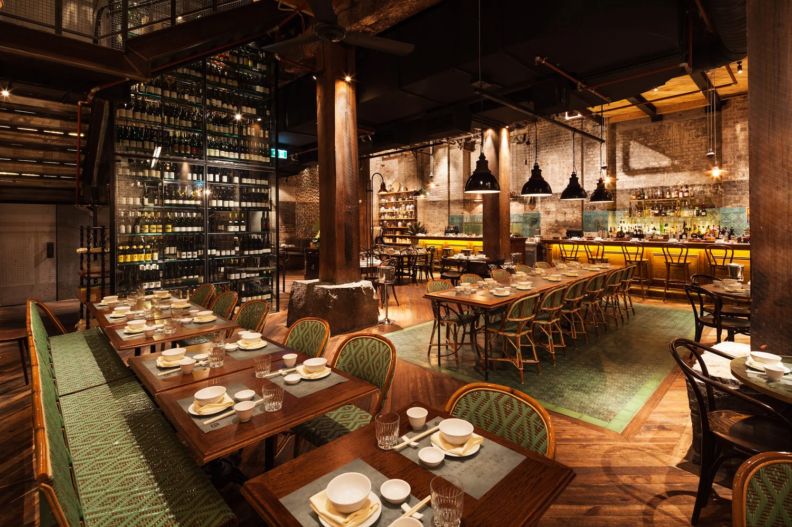
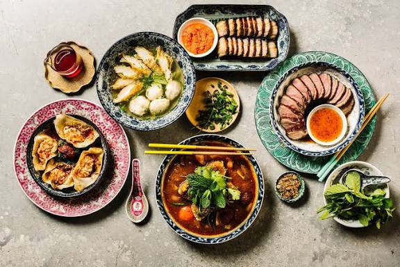
- Ester, Chippendale – Modern Australian, wood-fired meals.
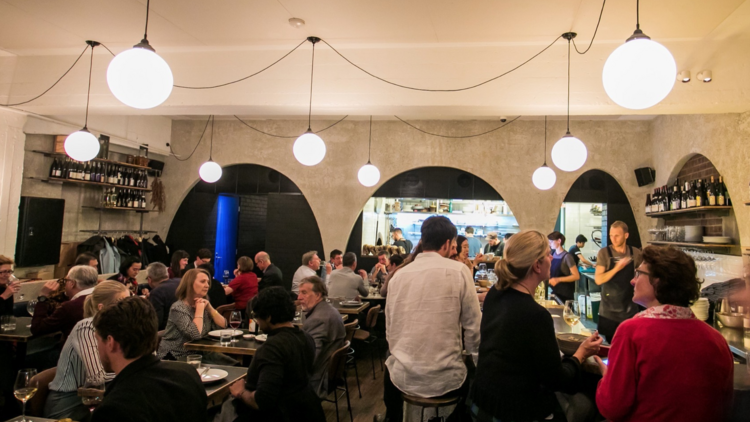
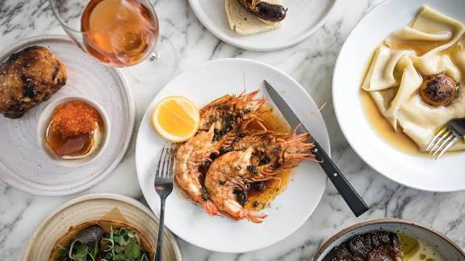
- Bathers’ Pavilion, Mosman – Beachside setting with great food.
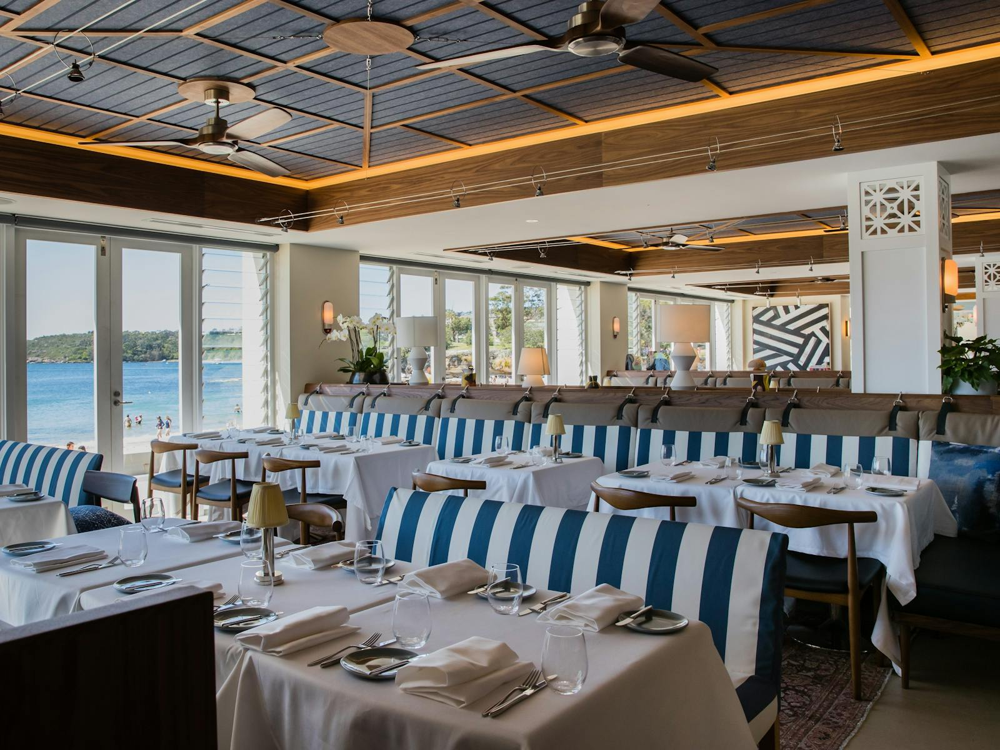
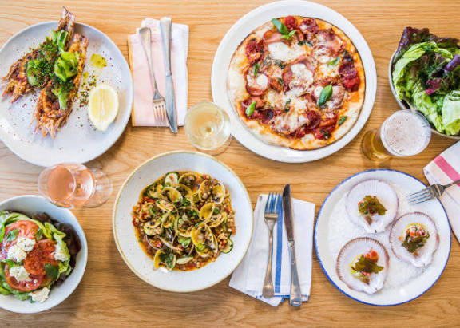
- Sean’s Panorama, Bondi – Relaxed vibe with amazing location.
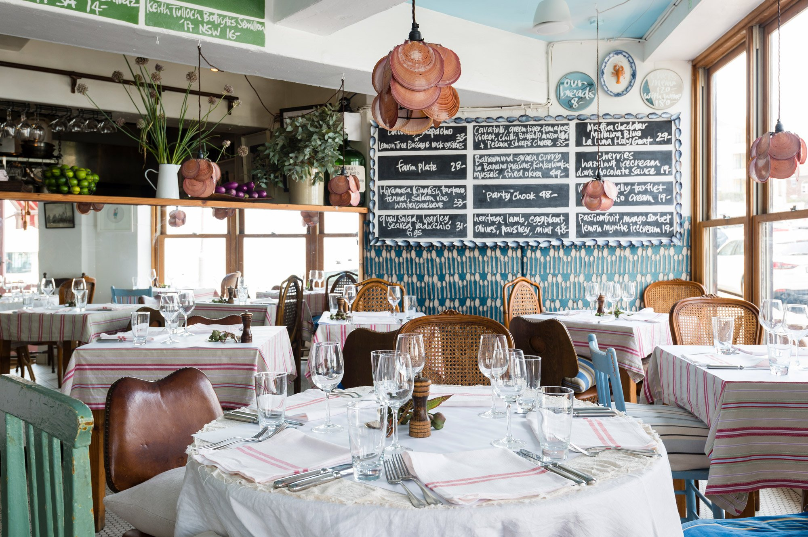

- Ho Jiak, Haymarket – Malaysian street food with homestyle flavours.
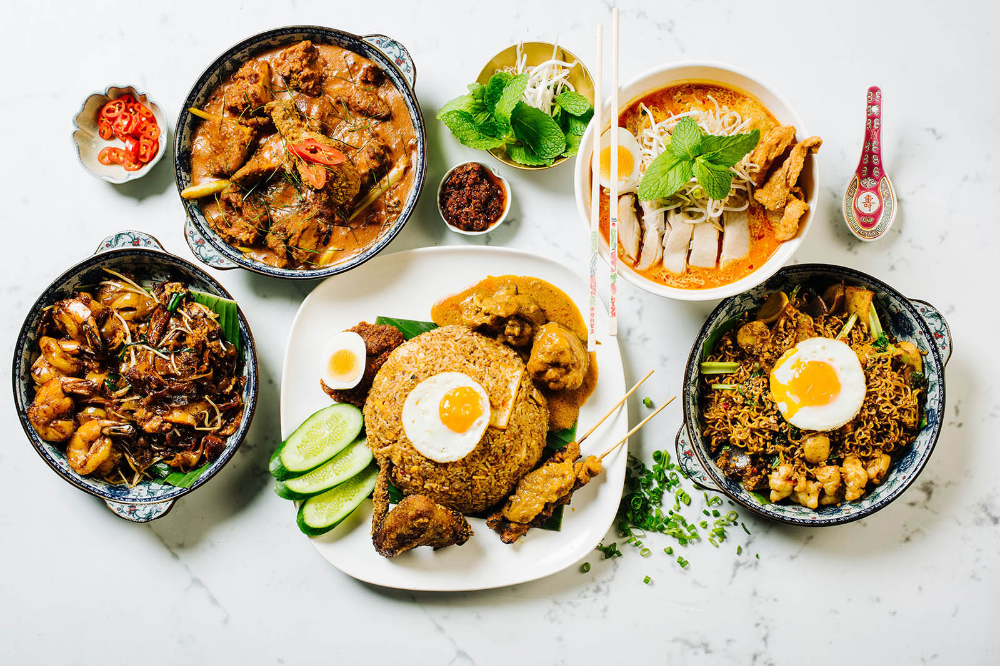
☕ Top 5 Cafes
- Edition Roasters, Darling Square – Specialty coffee & modern design.
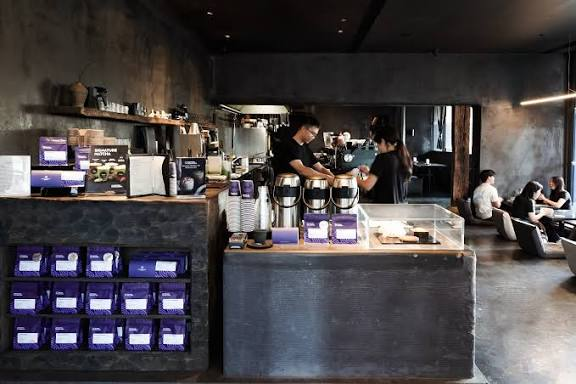
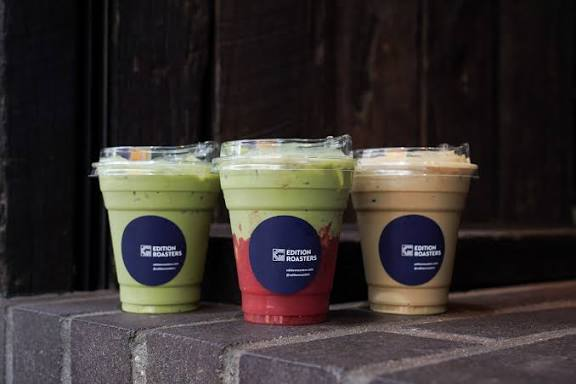
- Porch & Parlour, North Bondi – Beachside brunch vibes.
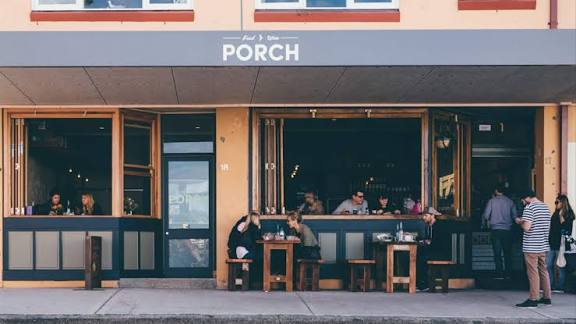
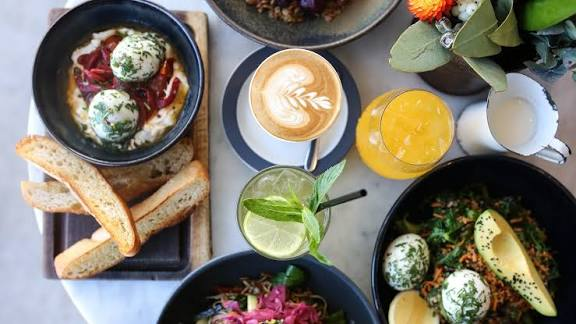
- Valentinas, Marrickville – Local café with great food & coffee.
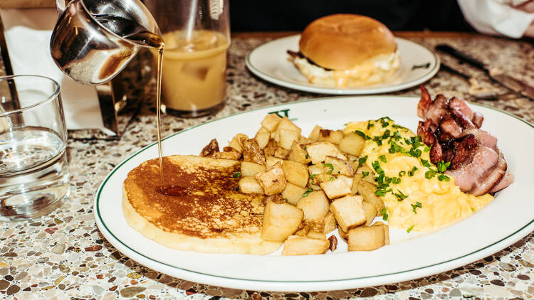
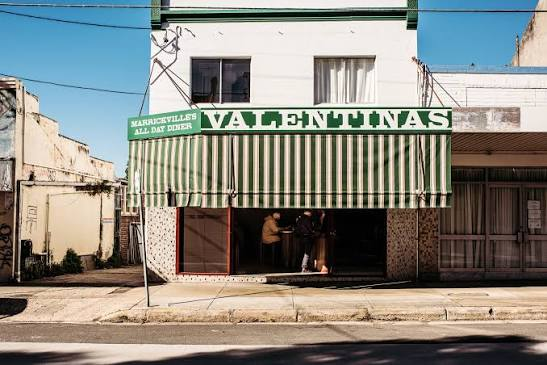
- Skittle Lane, Sydney CBD – Stylish and minimalist coffee spot.
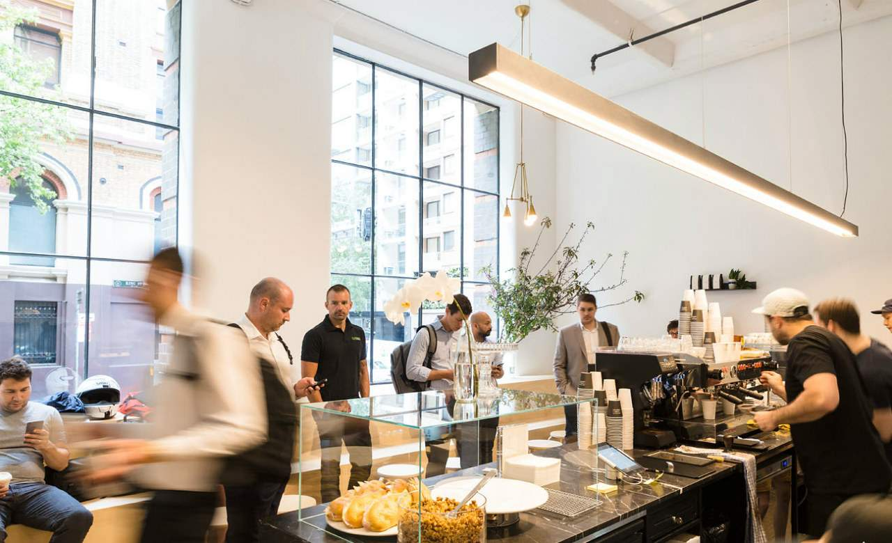
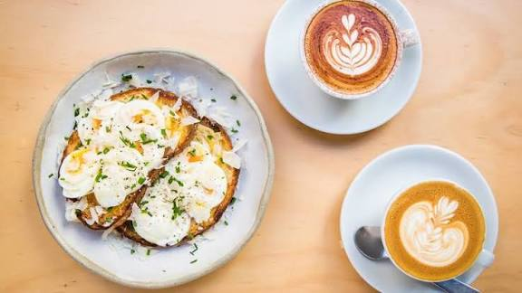
- The Grounds of Alexandria, Alexandria – Trendy café with lush gardens, farm animals, and themed installations.
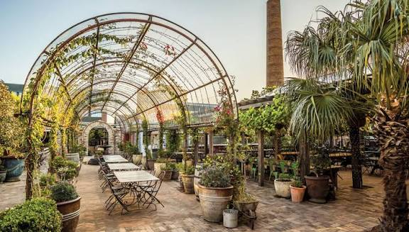
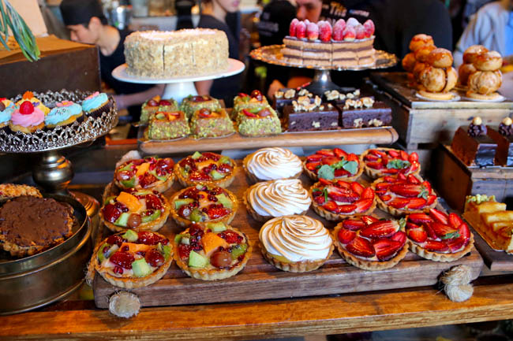